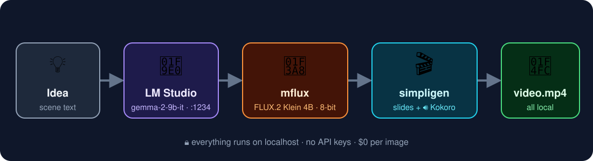
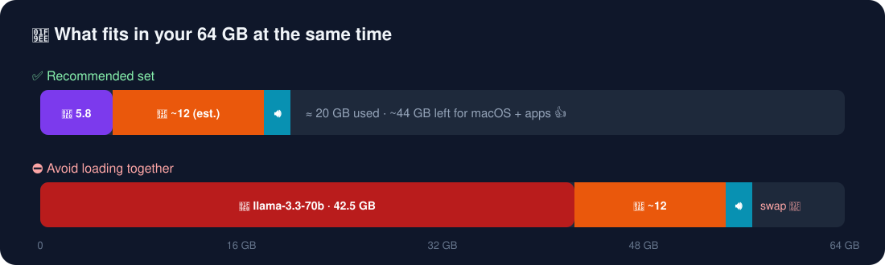
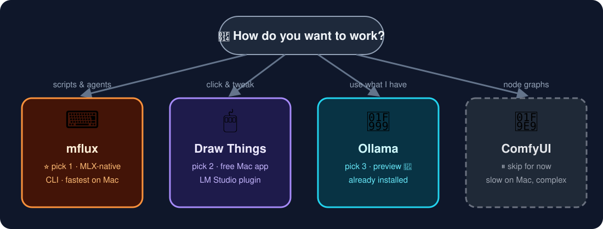
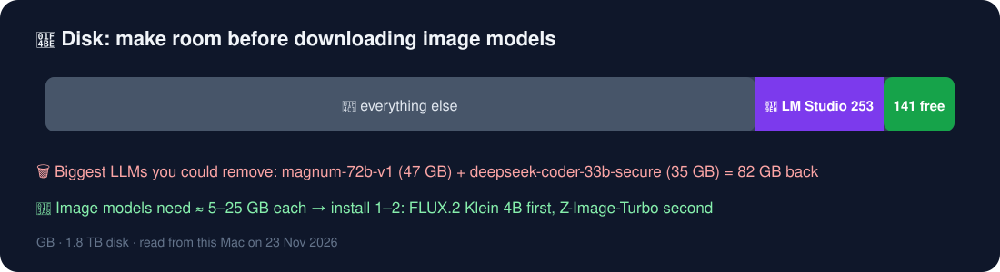

🖼️ My local image generation setup
✅ Installed 23 Nov 2026. 🎨 See the images it made →
Which image model to run on this Mac, which tool runs it, and exactly what to load, all next to LM Studio and simpligen.

✅ My option
🧠 A local LLM writes the prompts. LM Studio can do it, but its server asks for an API token, so this setup uses gemma3:12b in Ollama. LM Studio has no built-in image generation.
🎨 mflux draws the images. It's a free command-line tool built on Apple's MLX, so it's the fastest way to run image models on this Mac and easy for scripts, Claude Code and simpligen to call.
⭐ The model is FLUX.2 Klein 4B (8-bit). It's Apache 2.0 licensed, good at everything, and small enough to run next to an LLM and Kokoro.
📋 What I load
| Where | Load this | Why | Memory |
|---|---|---|---|
| 🧠 LM Studio | gemma-2-9b-it (already downloaded) | Writes and refines image prompts; small and fast | 5.8 GB |
| 🎨 mflux | FLUX.2 Klein 4B, 8-bit | Main image model. ✅ Installed: 34 s average per 1344×768 image on this M1 Max | 9.3 GB peak (measured) |
| 🎨 mflux (optional) | Z-Image-Turbo, 4- or 8-bit | Second style option; small footprint, slower (40–50 s) | ~10 GB (est.) |
| 🔊 Docker | Kokoro (already running on :8880) | Narration for simpligen videos | 2.1 GB |
| ⛔ Don't load together | llama-3.3-70b or magnum-72b plus an image model | 40+ GB LLMs leave too little room, and macOS starts swapping | 42–47 GB |
🧮 Memory at a glance

🛠️ Set it up
- 1️⃣ Make disk room
Image models are about 5–25 GB each. Removing the two biggest unused LLMs frees 82 GB.
~/.lmstudio/bin/lms ls # see what you have # remove in LM Studio → My Models: magnum-72b-v1 (47 GB), deepseek-coder-33b-secure (35 GB)
- 2️⃣ Install mflux
uv tool install --upgrade mflux # or: pipx install mflux mflux-generate --help # lists the current model names (Klein, Z-Image, Qwen-Image…)
- 3️⃣ First image (the model downloads on first run)
mflux-generate --model schnell -q 8 --steps 2 \ --prompt "isometric illustration of a video render pipeline, clean flat colours" \ --output scene.png
Then switch
--modelto FLUX.2 Klein 4B using the name--helpshows. mflux renames models between releases, so check the README. - 4️⃣ Let LM Studio write the prompt
~/.lmstudio/bin/lms server start && ~/.lmstudio/bin/lms load gemma-2-9b-it PROMPT=$(curl -s localhost:1234/v1/chat/completions -H 'Content-Type: application/json' -d '{ "model":"gemma-2-9b-it", "messages":[{"role":"user","content":"One image prompt, max 40 words, for a slide about local video rendering. Prompt only."}] }' | python3 -c 'import json,sys;print(json.load(sys.stdin)["choices"][0]["message"]["content"].strip())') mflux-generate --model schnell -q 8 --steps 2 --prompt "$PROMPT" --output scene.png
🤔 Other options
🦙 Ollama, tested 23 Nov 2026: x/z-image-turbo downloaded (12 GB), but Ollama 0.40.16 on this Mac answered "image generation models are not currently supported". mflux stays the image engine until an Ollama update enables it.

| Model | Licence | Use it for | On 64 GB |
|---|---|---|---|
| ⭐ FLUX.2 Klein 4B | Apache 2.0 | Default: all-rounder plus instruction edits | ✅ easy |
| ⚡ Z-Image-Turbo | Apache 2.0 | Smallest footprint, second look | ✅ easy |
| 🔤 Qwen-Image (2512) | check per version | Readable text and labels inside images | ✅ (guides say 48 GB+) |
| 🏆 ERNIE-Image Turbo | check model card | Top score in one small blind test | ❔ untested here |
| 🧓 SDXL | Open RAIL++ | Huge LoRA / style ecosystem | ✅ easy |
💾 Disk check

📝 Notes
- ⏱️ Speeds above come from other people's tests on newer chips, so expect an M1 Max to be somewhat slower.
- ⚖️ For commercial use, stick to Apache 2.0 models (Klein 4B, Z-Image-Turbo). Some FLUX "dev" and Qwen-Image versions are non-commercial or research-only.
- 🎬 Next for simpligen: an
imagefield per scene, next tosvg, so generated pictures go straight into videos.